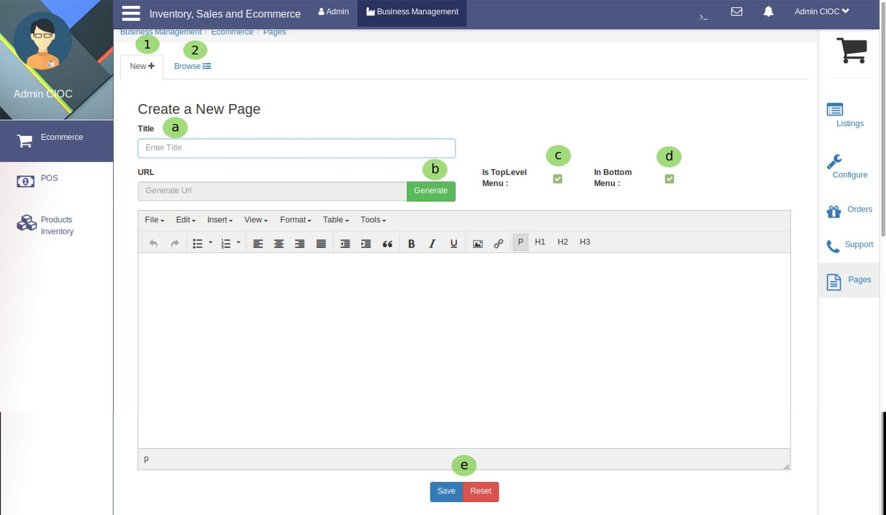
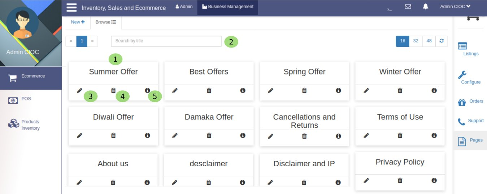
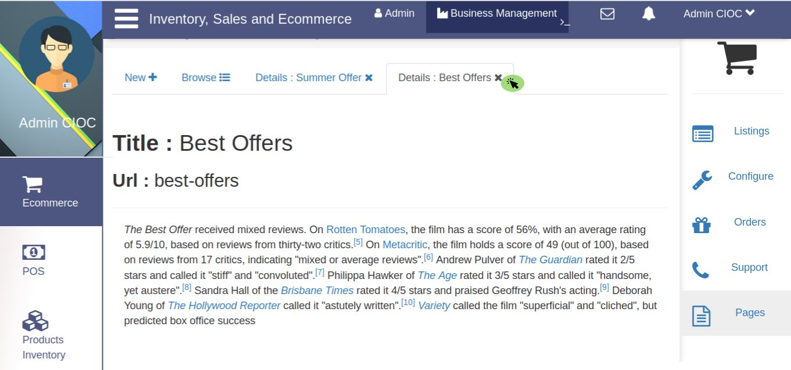

Pages¶

Fig. 34 Creating several types of pages for your business.
Now you are on Ecommerce’s pages portal to configure pages for your website. so let’s follow the steps:
- Click on New to create a new page.
Are you wandering how to create page ? Let’s see:
- Give the Title of a new page and
- Click on Generate button to generate page’s URL.
- Click on the checkbox to appear this page in Top Level Menu .
- Click on the checkbox to appear this page in Bottom Level Menu you can enable both too.
- Here you have 2 option either you Save the page or if you have done any mistake while creating a page then Reset it and create again. To save the page click on save button and to reset click on reset button. yes ! this is that simple.
- Click on Browse to browse the created pages.

Above you are seeing the created pages.
- Here you are seeing the page Title for e.g Summer offer, About Us, Terms of Use, Privacy Policy etc.
- Here you can Search your created page by title (Page Title) for e.g if you have to check .
- Here you have option to Edit the created page its process is same as for create page .
- Here you can see a Delete button so you can delete the page if you do not want it in your website.
- By clicking on this button you can see the Page Details as you are seeing below.

Once you checked the page click on  to close the page.
to close the page.